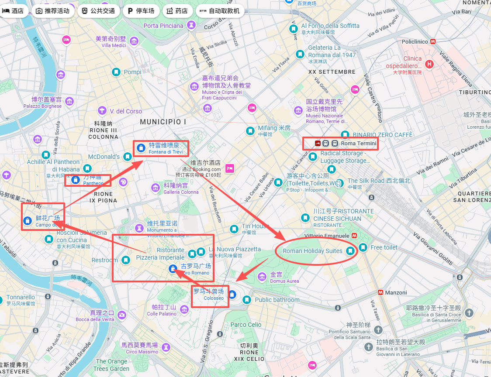
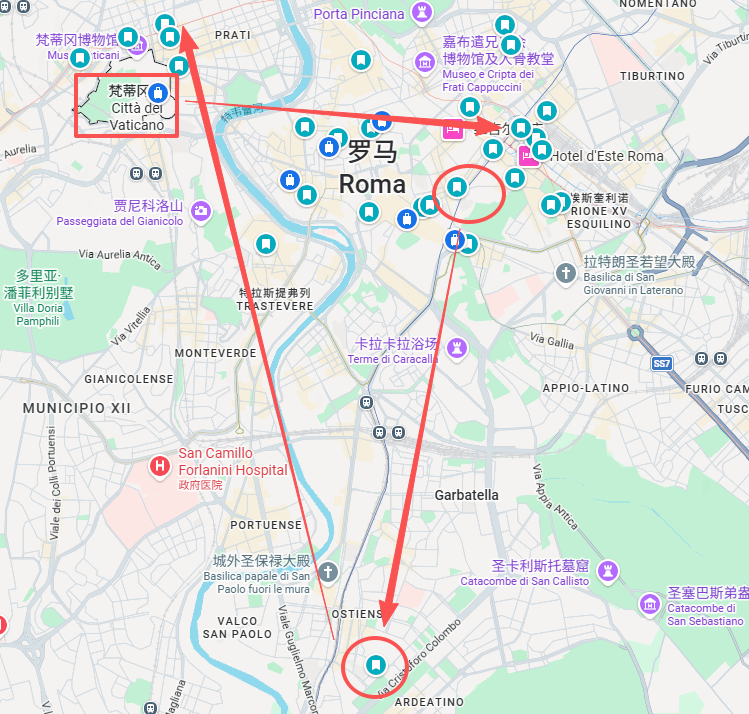
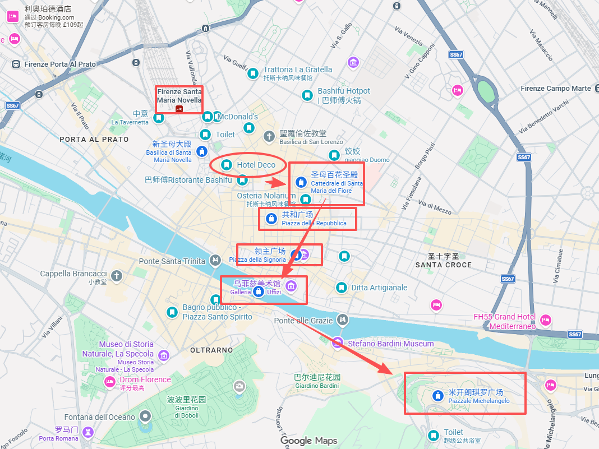
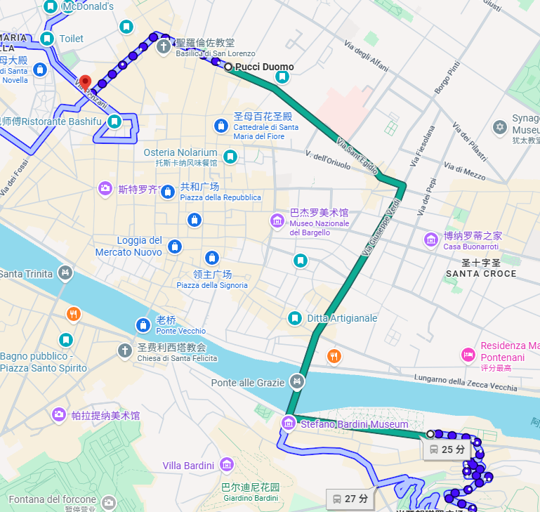
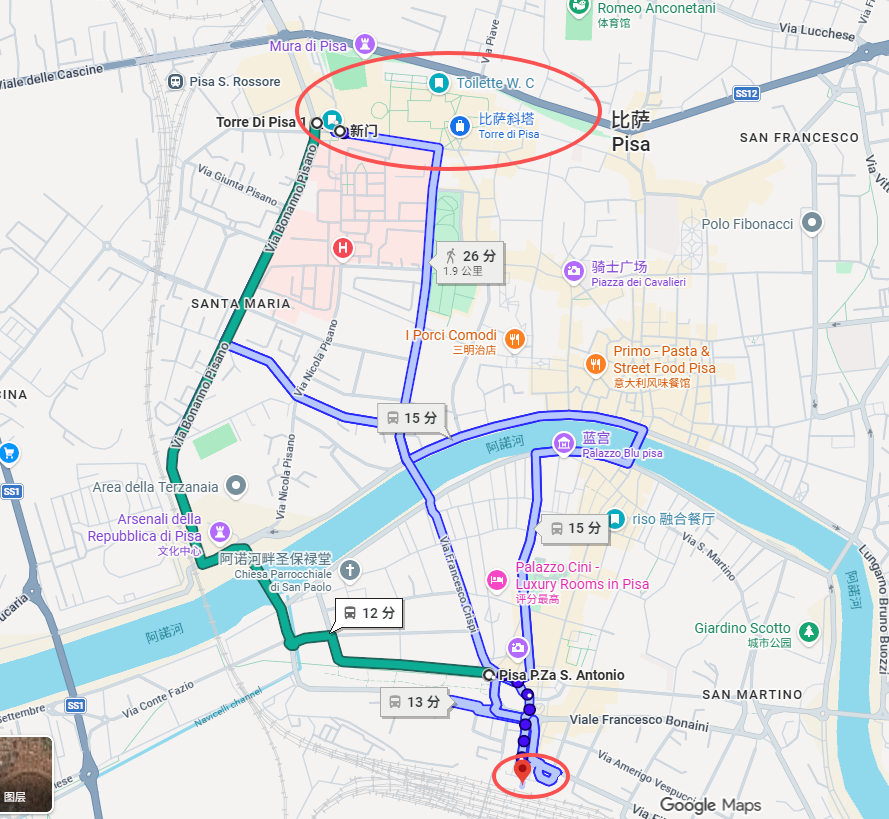
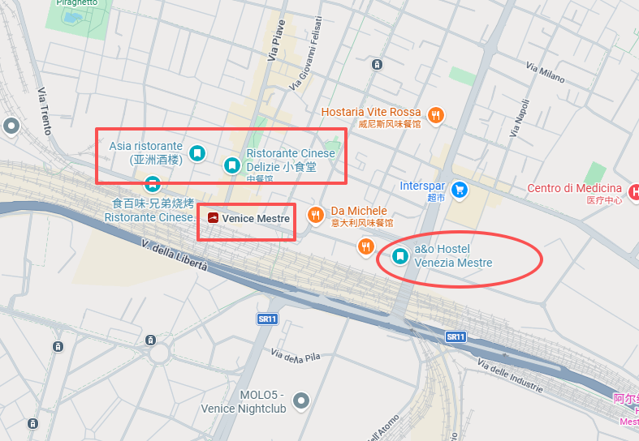
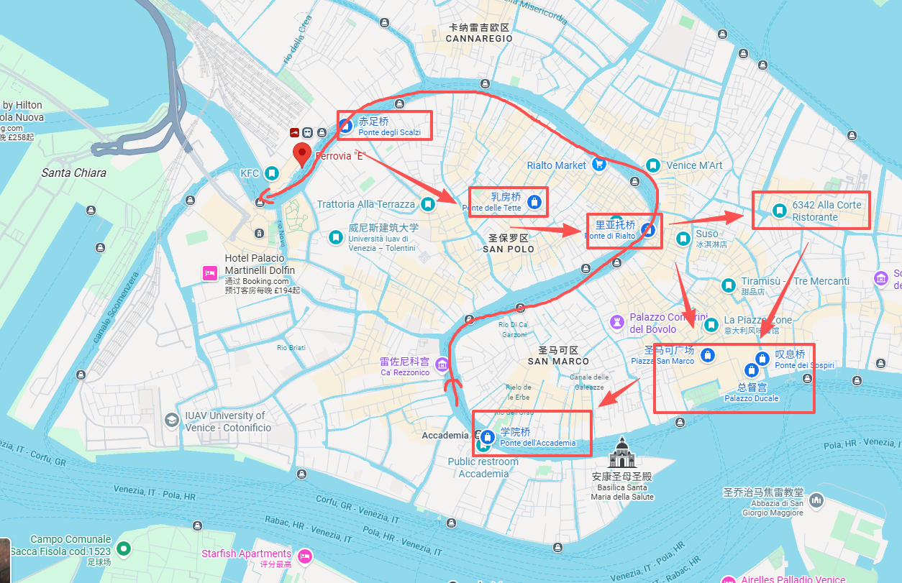
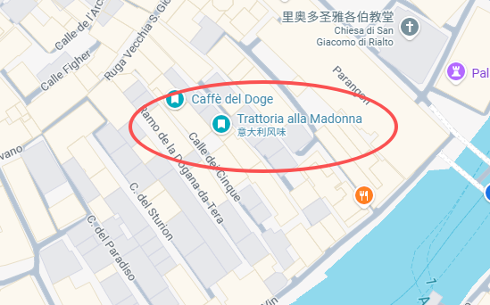
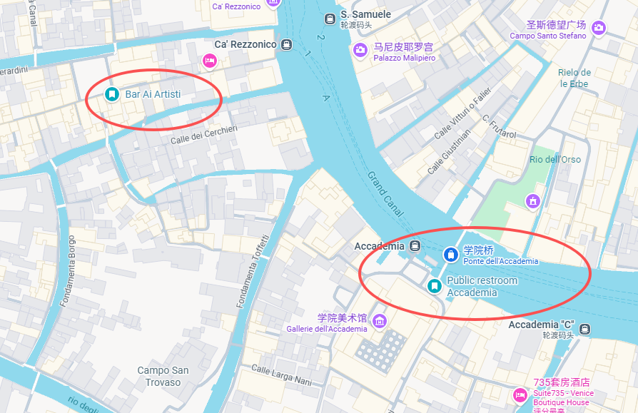
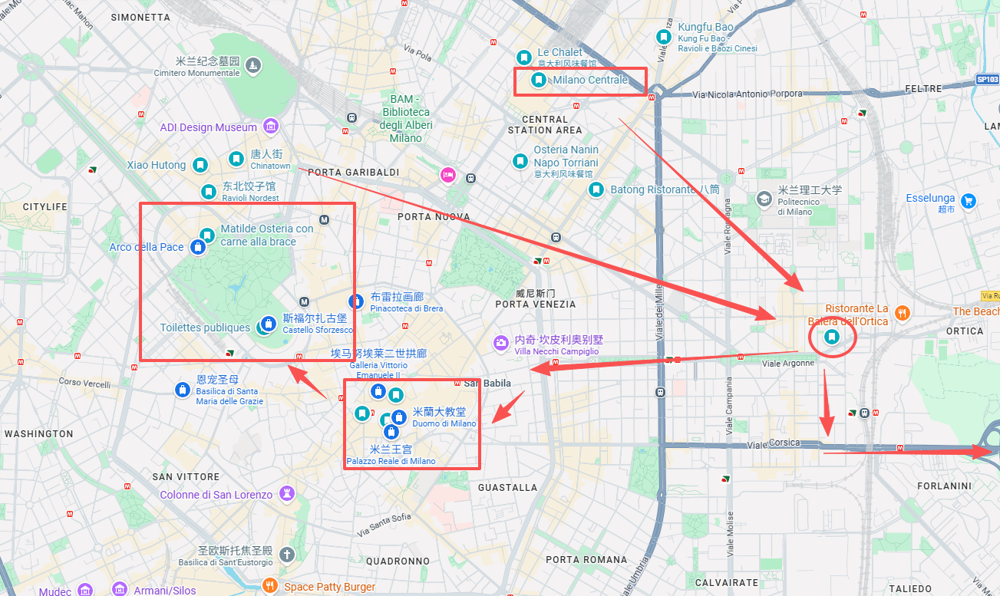

20:00左右 抵达罗马 → Roman Holiday Suites 入住 → 简单吃饭、休息。

11:15 罗马斗兽场 Colosseo / Colosseum 预约。结束后午饭，下午按下面顺序慢慢走：
晚上吃饭后回原酒店取行李，再打车去路演酒店。
上午休息和准备。下午路演；约15:00–16:00结束后，有精神再随便去市区走走，不设必须景点。
退房 → 梵蒂冈附近寄存行李 → 12:00 梵蒂冈博物馆 → 西斯廷礼拜堂，整体约2–2.5小时。
取行李后去 罗马特米尼火车站 Roma Termini，建议订 17:00以后 的高铁去佛罗伦萨。

到 佛罗伦萨新圣母玛利亚火车站 Firenze Santa Maria Novella → 酒店放行李 → 附近中餐/晚饭 → 休息。
推荐步行顺序：
米开朗基罗广场回程可坐 23路公交，上车 contactless 刷卡即可。


12:30以后 从 佛罗伦萨新圣母玛利亚火车站 Firenze Santa Maria Novella (SMN) 出发，预计14:00左右到达 比萨中央火车站 Pisa Centrale。
到达后的顺序：
去程优先坐公交到奇迹广场；参观结束后，看体力选择步行或公交回比萨中央火车站。
奇迹广场外部免费；主要付费项目是登塔和其他建筑内部。塔票需预约具体时间。

佛罗伦萨 → Venezia Mestre，酒店在火车站附近，放行李后附近吃饭休息。

11:30左右 出门。主岛按下面顺序走：
最后从 Accademia 坐 Vaporetto 1号线 回 Ferrovia / Santa Lucia，再返回 Mestre。



威尼斯 → 米兰中央火车站 Milano Centrale → 车站附近吃饭 → 坐车去酒店，当天不排正式景点。
City Walk 顺序：
当天买 ATM 纸质24小时票，首次验证后开始计时。

早上退房，优先接入 M4 蓝线 前往 米兰利纳特机场 Aeroporto di Milano Linate。